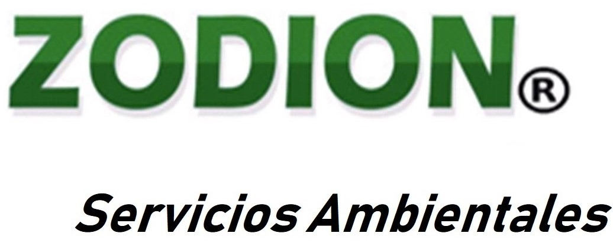
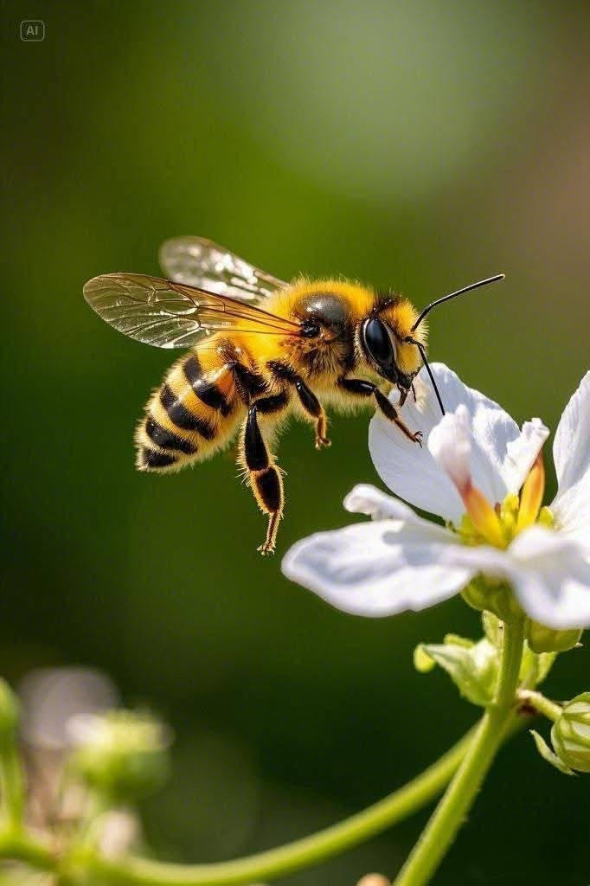

Aseguramos el rigor normativo y la sostenibilidad de su infraestructura mediante metodologías científicas de precisión, bioseguridad y control ecológico sin agentes químicos intrusivos.
Soluciones Técnicas de Alta Ingeniería Ambiental
Diseñadas específicamente para proteger la reputación corporativa, cumplir normativas estrictas y garantizar entornos industriales seguros.
Asesoría experta bajo códigos NACE 71.12 y 74.90 para evaluación de impacto, cumplimiento regulatorio y optimización de procesos ecológicos industriales.
Protocolos avanzados de control biológico e inocuidad alimentaria (BPM). Rechazamos la fumigación química tradicional aplicando gestión ambiental limpia.
Implementación de protocolos de contra-muestra para incidentes de contaminación en plantas de producción y verificación de estándares de calidad.
Galería de Operación y Filosofía
Registro visual de nuestras expediciones técnicas, análisis ecológico y bioseguridad industrial.

Nuestro Proceso Técnico
Transparencia y rigor estructurado en 4 fases para garantizar la tranquilidad de su organización.
Evaluación inicial in situ para identificar variables ecológicas y riesgos operativos críticos.
Diseño de la estrategia técnica alineada estrictamente con normativas de cumplimiento y BPM.
Aplicación de soluciones técnicas avanzadas sin recurrir a químicos de impacto nocivo.
Entrega de documentación formal, trazabilidad y soporte legal para auditorías externas.
Conecte con nuestro equipo directivo y técnico para evaluar las necesidades específicas de su infraestructura o institución.